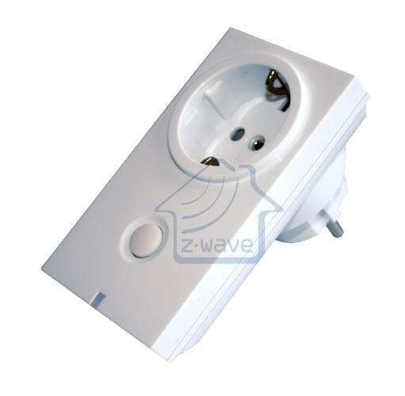
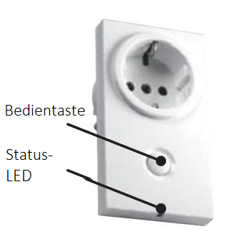

DUW_064381
Firmware Version : 1.0 |
 |
Kurzinfo
A Dieses Gerät ist ein Z-Wave-Aktor. Nachdem der Controller in den Inklusion-Modus gesetzt wurde, bestätigt dreimal Drücken auf die Taste am Schalter die Inklusion. Eine leuchtende LED bestätigt den Erfolg.
Weitergehende Informationen finden sich in den jeweiligen Abschnitten dieses Handbuches.
Was ist Z-Wave?
Dieses Produkt entspricht dem Z-Wave-Standard. Z-Wave ist der internationale Funkstandard zur Kommunikation von Geräten im intelligenten Haus. Z-Wave-Geräte funken in Europa auf der Frequenz von 868.42 MHz.Z-Wave ermöglicht eine sichere und stabile Kommunikation indem jede Nachricht vom Empfänger rückbestätigt wird (Zweiwege-Kommunikation) und alle netzbetriebenen Geräte Nachrichten weiterleiten (Routing) können, wenn eine direkte Funkbeziehung zwischen Sender und Empfänger gestört ist.
Dank Z-Wave können Produkte unterschiedlicher Hersteller miteinander in einem Funknetz verwendet werden. Damit ist auch dieses Produkt mit beliebigen anderen Produkten anderer Hersteller in einem gemeinsamen Z-Wave Funknetz einsetzbar.
Z-Wave unterscheidet zwischen Controllern und Slaves. Slaves sind entweder Sensoren S, die Daten ermitteln oder Aktoren A, die Aktionen ausführen (Sensoren und Aktoren sind mitunter in einem Gerät vereint). Controller sind entweder statische netzgespeiste Controller C (auch IP-Gateways genannt) oder mobile batteriebetriebene Controller (Fernbedienungen, Batteriewandschalter)R. Damit ergeben sich eine Reihe prinzipieller Kommunikationsmöglichkeiten in einem Z-Wave-Netz:

- Controller steuern Aktoren.
- Aktoren melden Änderungen ihres Schaltzustandes
- Sensoren melden Messwerte oder Statusänderungen an Controller
- Sensoren steuern Aktoren direkt bei Ereignissen
- Aktoren steuern andere Aktoren
- Fernbedienungen erzeugen Ereignisse in einem statischen Controller, die zum Beispiel zum Steuern von Szenen genutzt werden
- Fernbedienungen steuern Aktoren
Controller können in einem Z-Wave Netzwerk zwei unterschiedliche Rollen einnehmen. Es gibt immer genau einen Primärcontroller der das Netzwerk steuert und Geräte in das Netzwerk inkludiert oder aus dem Netzwerk exkludiert. Dieser Controller kann weiter Nutzerfunktionen - zum Beispiel Tasten - besitzen. Alle anderen Controller mit Nutzerfunktionen erfüllen keine Managementaufgaben. Sie heißen Sekundärcontroller. Trotzdem verfügen sie - sozusagen als Backup - über alle notwendigen Informationen über das Netz. Das Übersichtsbild zeigt, das - batteriegestützt - Sensoren nicht direkt mit - batteriebetriebenen - Fernbedienungen kommunizieren. Sie senden nur Daten an statische Controller oder steuern Aktoren direkt.
Produktbeschreibung
Der Düwi 064381 ist ein Schalt-Aktor, der als Zwischenstecker zwischen Standard-Schuko-Steckdosen und über Kabel angeschlossenen elektrischen Verbrauchern bis zu einer Last von 3500W eingesetzt wird. Das Gerät mit Schutzklasse IP44 kann auch in feuchten Umgebungen eingesetzt werden. Die Bedienung erfolgt über einen Taster am Gerät oder über Z-Wave Kommandos. Der Schaltzustand wird über eine Dreifarben-LED am Gerät angezeigt.
Sicherheitshinweis
Lesen Sie dieses Handbuch vor der Installation!
Achtung! Dieses Gerät wird mit 230 V Netzspannung betrieben. Beachten Sie die Sicherheitshinweise während der Installation. Vor Beginn der Installation müssen alle Anschlussleitungen potentialfrei sein. Weiterhin muss sichergestellt sein, dass während der Installation niemand die Spannung wieder zuschalten kann (Sicherung wieder aktivieren). Elektrische Arbeiten dürfen nur von einer Elektrofachkraft in Übereinstimmung mit den geltenden Regeln und Vorschriften durchgeführt werden.
Verwenden Sie das Gerät auf keine andere Weise als im Handbuch angegeben. Der Hersteller übernimmt keine Garantie für unsachgemäße Bedienung.
Installationsanleitung
Der Düwi_064381 Zwischenstecker Schalter IP44 kann in jede Standard-Schuko-Steckdose eingesetzt werden. Aufgrund der Schutzklasse IP44 kann der Zwischenstecker Schalter in feuchten Umgebungen eingesetzt werden. Aus Überhitzungsgründen sollte das Gerät nicht direktem Sonnenlicht ausgesetzt werden und die Umgebungstemperatur zwischen 0°C und 40°C liegen.
Verhalten des Gerätes im Z-Wave Netz
I Im Auslieferungszustand ist das Gerät mit keinem Z-Wave-Netz verbunden. Damit es mit anderen Z-Wave Geräten kommunizieren kann, muss es in ein bestehendes Z-Wave Netz eingebunden werden. Dieser Prozess wird bei Z-Wave Inklusion genannt. Geräte können Netzwerke auch wieder verlassen. Dieser Prozess heißt bei Z-Wave Exklusion. Beide Prozesse werden von einem Controller gestartet, der dazu in einen Inklusion- bzw. Exklusion-Modus geschaltet werden muss. Das Handbuch des Controllers enthält Informationen, wie er in diese Modi zu schalten ist. Erst wenn der Controller des Z-Wave Netzes im Inclusion-Modus ist, können Geräte hinzugefügt werden. Das Verlassen des Netzes durch Exklusion führt zum Rücksetzen dieses Gerätes in den Auslieferungszustand.
Das Produkt wird im Auslieferungszustand "nicht programmiert" ausgeliefert. Zum Anlernen des Funk-Zwischensteckers benötigen Sie einen Controller. Den Inklusion-Modus/ Exklusion-Modus erreichen Sie durch dreifachen Tastendruck auf die gewünschte Gruppe/ Szene der Funk- Fernbedienung bzw. Drücken des Wandschalters. Zur Bestätigung von Inklusion und Exklusion wird der Taster am Zwischenstecker dreimal hintereinander gedrückt.
Bedienung des Gerätes

Das Gerät kann für elektrische Verbraucher, wie HV-, NV-Halogenlampen, Leuchtstofflampen und Glühlampen, mit einer Schaltleistung bis 3500 W eingesetzt werden. Die Bedienung kann wahlweise via Funk über einen Controller (Funk-Fernbedienung / -Wandschalter) oder direkt über die Taste am Funk-Zwischenstecker erfolgen. Der Schaltzustand wird über eine rote LED im Taster angezeigt.
Bedeutung der LED-Signale
- Grünes Leuchten (3 Sekunden) = Konfiguration erfolgreich
- Rotes Leuchten (3 Sekunden) = Konfiguration misslungen
Kommandoklassen
Unterstützte Kommandoklassen- Basic (Version 1)
- Hail (Version 1)
- Binary Switch (Version 1)
- Version (Version 1)
- All Switch (Version 1)
- Indicator (Version 1)
- Manufacturer Specific (Version 1)
- Protection (Version 1)
Technische Daten
| Stromversorgung | 230V ~50-60 Hz |
| Schaltbare Lasten | 16 A (3500 W) |
| Schutzklasse | 44 |
| Explorer Frames | Nein |
| SDK | 5.02 pl1 |
| Geräteart | Slave with routing capabilities |
| Allgemeiner Z-Wave-Gerätetyp | Binary Switch |
| Spezieller Z-Wave-Gerätetyp | Binary Power Switch |
| Router | Ja |
| FLiRS | Nein |
| Firmware Version | 1.0 |
Erläuterung Z-Wave-spezifischer Begriffe
- Controller... ist ein Z-Wave-Gerät mit erweiterten Fähigkeiten zur Verwaltung eines Netzes. Dies sind in der Regel Gateways oder Fernbedienungen. Batteriegespeiste Wandschalter können auch Controller sein.
- Slave... ist ein Z-Wave-Gerät mit erweiterten Fähigkeiten zur Verwaltung eines Netzes. Es gibt Sensoren, Aktoren und auch Fernbedienungen als Slaves.
- Primärcontroller (engl. Primary Controller)... ist der zentrale Netzverwalter des Z-Wave-Netzes.
- Inklusion (eng. Inclusion)... ist der Prozess des Einbindens eines neuen Gerätes ins Z-Wave-Netz.
- Exklusion (engl. Exclusion)... ist der Prozess des Entfernens eines Gerätes aus dem Z-Wave-Netz.
- Assoziation (engl. Association)... ist eine Steuerbeziehung zwischen einem steuernden und einem gesteuerten Gerät. Die Information dazu wird im steuernden Gerät in einer Assoziationsgruppe hinterlegt.
- Wakeup Notifikation (engl. Wakeup Notification) ... ist eine spezielle Funknachricht, mit der ein batteriegespeistes Gerät bekanntmacht, daß es im Aufwachstatus ist und Z-Wave-Nachrichten empfangen kann.
- Node Information Frame... ist eine spezielle Funknachricht, mit der ein Z-Wave-Gerät seine Geräteeigenschaften bekanntgibt.
Entsorgungshinweis
Dieses Gerät enthält keine Batterien.
Das ist ein elektrisches Gerät. Es kann kostenfrei bei entsprechenden Annahmestellen abgegeben werden.